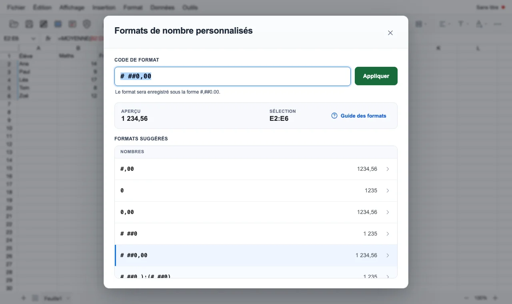

Formats de nombre
Un format change l’affichage d’un nombre, pas sa valeur : les calculs gardent toutes les décimales.
Choisir un format
Format › Nombre, ou la liste Automatique de la barre de boutons.
| Format | Exemple |
|---|---|
| Automatique | 1200,09 |
| Texte | 1200,09, aligné à gauche ; la saisie reste un texte |
| Nombre | 1200,09 |
| Pourcentage | 120009,00% ; 0,25 devient 25,00% |
| Scienfique | 1,20E+03 |
| Comptabilité | (1 200,09) € |
| Monnaie | 1 200,09 € |
| Date, Heure, Date heure | pour les dates : 29/11/2017, 3:00 PM, 15:00… |
Le symbole monétaire est celui de la langue de l’interface.
| Bouton | Effet |
|---|---|
| pourcentage | |
| une décimale de moins | |
| une décimale de plus |
Ces boutons valent aussi pour les nombres d’une liste. Pour arrondir la valeur elle-même, utiliser ARRONDI.
Format personnalisé
Format › Nombre › Format numérique personnalisé… : choisir un format suggéré, ou écrire un code. L’aperçu montre le résultat ; Guide des formats rappelle les signes ; Appliquer le donne à la sélection.

| Signe | Rôle | Code | 1234,5 s’affiche |
|---|---|---|---|
0 | un chiffre, zéro compris | 0,00 | 1234,50 |
# | un chiffre s’il est utile | #,## | 1234,5 |
| espace | groupe les milliers | # ##0 | 1 235 |
% | pourcentage | 0% | 123450% |
"texte" | un texte, une unité | 0,0 "m" | 1234,5 m |
E+00 | notation scientifique | 0,00E+00 | 1,23E+03 |
; | formats des positifs, négatifs, zéros, textes | 0;-0;"nul" | 1235 |
[Red] | couleur | 0;[Red]-0 | négatifs en rouge |
Le code se tape avec les séparateurs de la langue ; la fenêtre indique la forme sous laquelle il est enregistré (#,##0.00), la même qu’Excel.
Dates et heures
| Code | 29 août 2026, 14 h 30 |
|---|---|
dd/MM/yyyy | 29/08/2026 |
d mmm yyyy | 29 Aug 2026 |
dddd d mmmm yyyy | Saturday 29 August 2026 |
hh:mm | 14:30 |
dd/MM/yyyy hh:mm | 29/08/2026 14:30 |
Les noms de mois et de jours s’affichent en anglais.
Unités
Sous Unités, des formats comme 0,00 "V", 0,00 "Ω", 0,00 "mm" : la cellule reste un nombre, avec lequel on calcule.